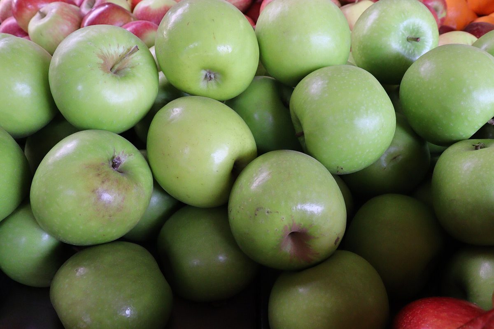
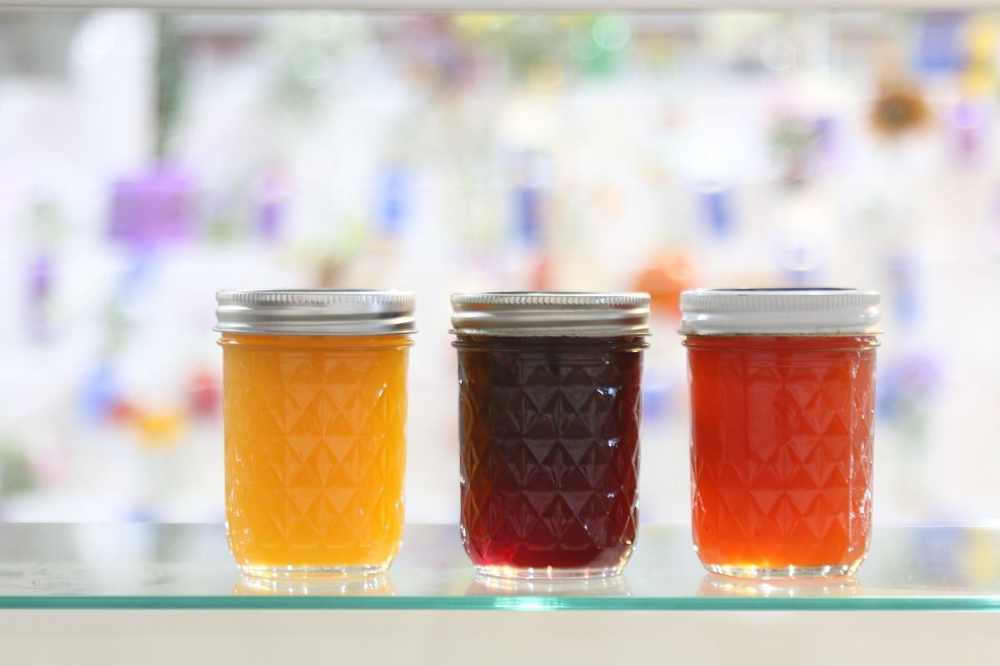
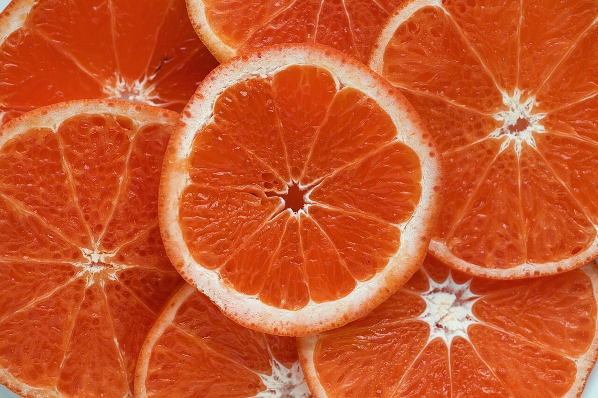
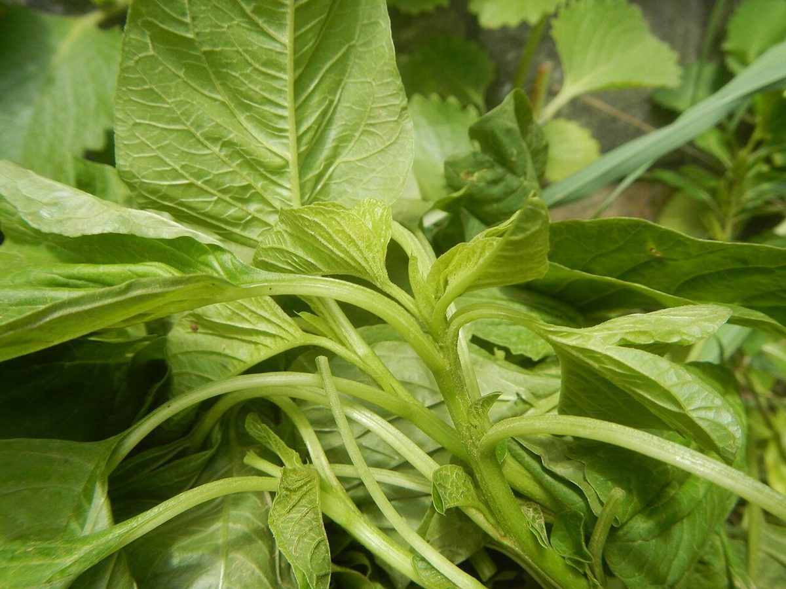

店のこと
カフスボタンの部位の配置図
お店の詳しい情報は準備中です。ここでは、制作側が考えたデザインの考え方を紹介します。


制作側の連想
番号は、部位の番号
ホームの図にある1〜6の番号は、それぞれカフスボタンの部位の名前に対応します。カフスボタンの部位を図にしたもので、制作側の連想です。お店の理念・由来とは無関係で、実際の製品の仕様を示すものでもありません。
1飾り面
正面に見える模様や石をのせる部分で、袖口で外を向く側。
2縁(ベゼル)
飾り面をぐるりと囲む輪の部分で、面を守りながら形を引き締める。
3台座
飾り面と縁を裏から受ける土台の部分で、鎖をつなぐ金具がつく。
4つなぎ鎖
台座と留め棒をつなぐ小さな輪の連なりで、動きに合わせて曲がる。
5留め棒
鎖の先につく細い棒で、袖口の穴に通したあと横向きに回して留める。
6止め玉
留め棒の両端につく小さな丸い部分で、棒の先を保護して見た目も整える。
写真(イメージ)
写真(イメージ)



写真はイメージです。お店のものではありません。